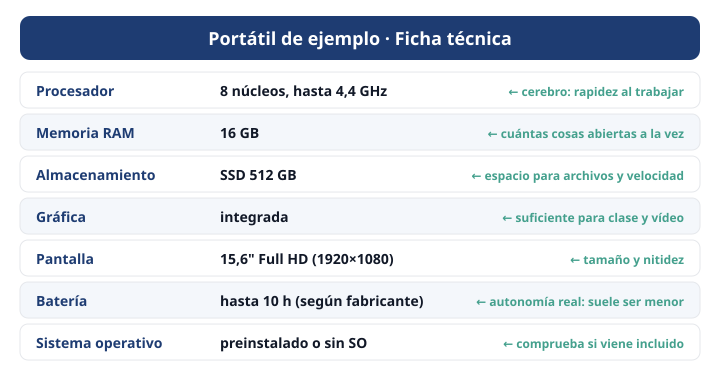

Módulo 11: Elegir un ordenador: leer una ficha técnica
Entiende qué significan los números antes de comprar.
Informática básica · Módulo 11 de 12
¿Qué dicen todos esos números?
Al comprar un ordenador o un móvil verás una ficha técnica. Con lo aprendido ya puedes entenderla.

Ficha de ejemplo (datos ficticios) con la explicación de cada línea.
| Uso | RAM orientativa | Almacenamiento | Gráfica |
|---|---|---|---|
| Clase, ofimática, navegar, vídeos | 8 GB | SSD de 256–512 GB | Integrada |
| Edición de fotos, programación, multitarea | 16 GB | SSD de 512 GB o más | Integrada o dedicada básica |
| Juegos exigentes, vídeo, 3D | 16–32 GB | SSD de 1 TB | Dedicada |
- ✅ Primero decide para qué lo vas a usar; después mira el presupuesto.
- ✅ Prioriza SSD y suficiente RAM: se notan más que unos pocos GHz.
- ✅ Comprueba si incluye sistema operativo.
- ✅ Mira el peso y la batería si lo vas a llevar a clase.
- ✅ Compara en tiendas fiables y desconfía de chollos imposibles.
🧩 Lo usarás para clase, documentos y vídeos. ¿Qué configuración tiene más sentido?
🧩 En una ficha pone «SSD 512 GB». ¿A qué se refiere?
✍️ Actividad: compara dos equipos
Busca dos portátiles de precio parecido y compara procesador, RAM, almacenamiento, pantalla, peso y batería. ¿Cuál elegirías y por qué?
Resumen: uso → presupuesto → RAM y SSD → resto. Lee la ficha con calma.